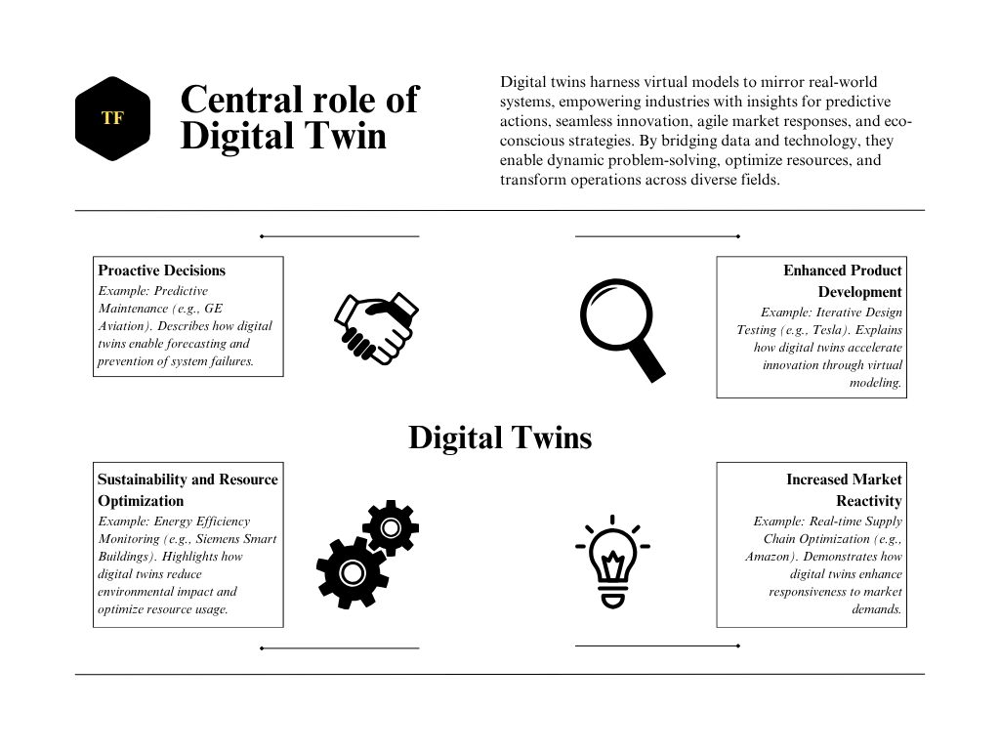
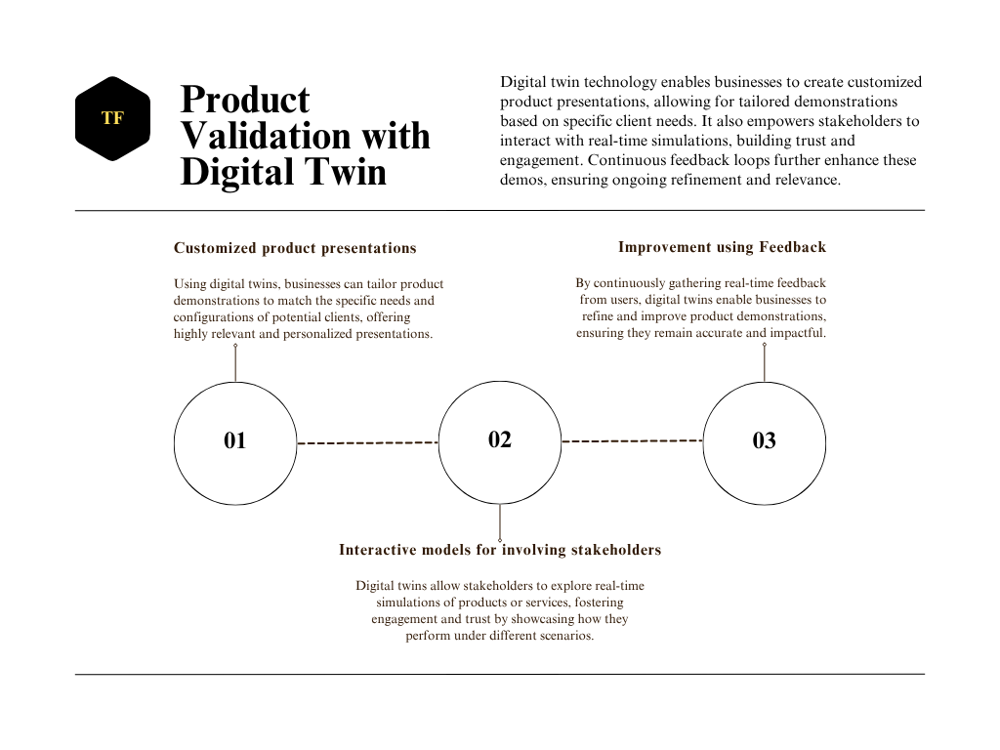
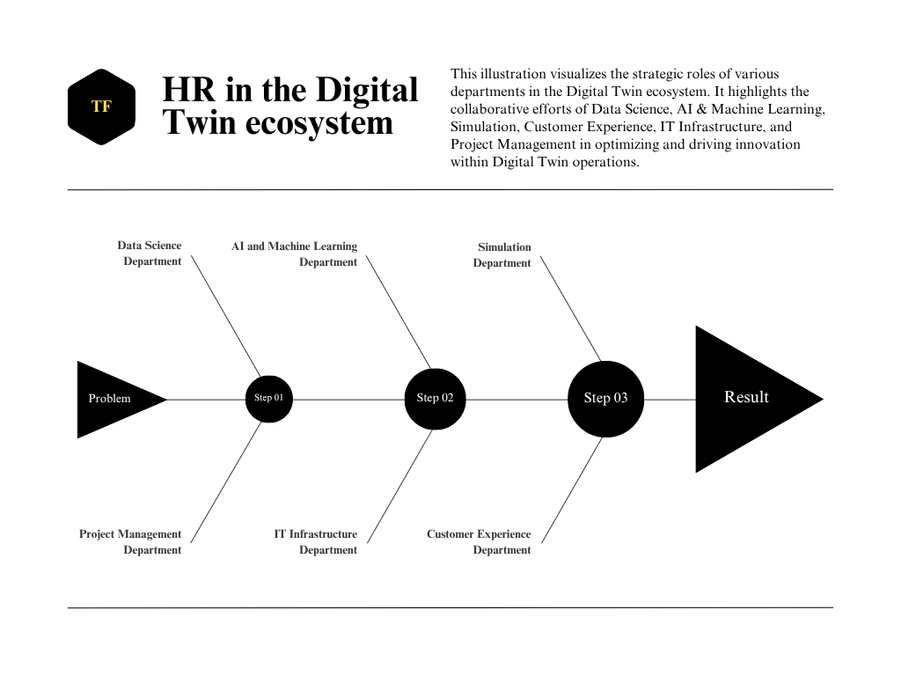
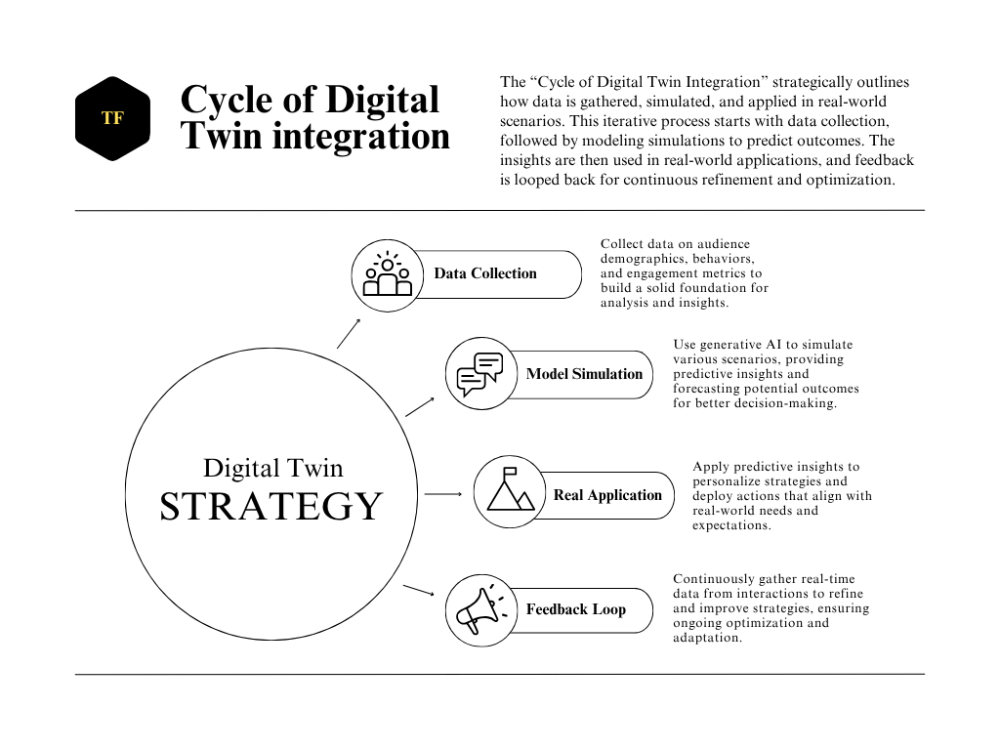
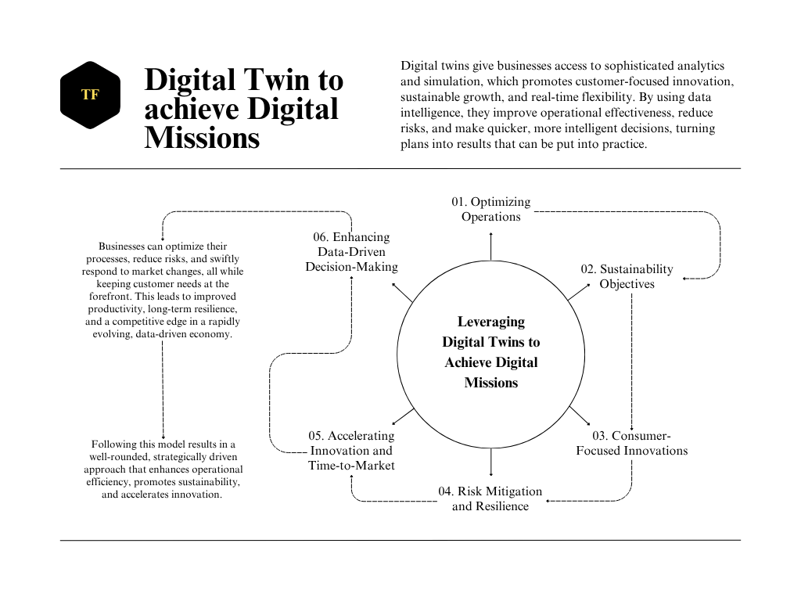

Digital Twin And Digital Mission
Explore the strategic roles of departments in the Digital Twin ecosystem, driving innovation and operational optimization.
The idea of a "Digital Twin," which is a high-fidelity virtual model of a physical product or service, with its process, system, and prototype has altered from being an operational tool to a wholly strategic asset in a world that is digitizing in a fast phase. Today's organizations, in terms of any business, should integrate the Digital Twins concept into their larger or smaller organizational and marketing plans in addition to adopting them if they want to stay competitive to deliver their digital mission. To give a comprehensive insight, this article explores the scientific, analytical, and strategic aspects of implementing digital twins.

Why should any innovative company develop a Digital Twin?
Businesses can now build, track, trace, and optimize their deals and offers with the help of a digital twin. Digital Twins, in contrast to traditional technologies, showcases real-time actionable insights and simulates real-world scenarios, facilitating data-driven decision-making at scale. There are strategic benefits to their development:
- Making Proactive Decisions using Predictive Analytics: Digital twins use historical and real-time data to forecast possible failures, maximize operational effectiveness, and reduce risks before they become problems. For instance, GE Aviation monitors airplane engines using digital twins, allowing for predictive maintenance that lowers operating expenses and downtime.
- Enhanced Product Development: Digital twins enable virtual prototyping, which lowers costs and speeds up development processes. In order to detect problems and improve features before production, businesses such as Tesla employ digital twins to model and test car designs in a variety of scenarios.
- Increased Market Reactivity: By offering detailed information about consumer behavior, digital twins let businesses quickly modify their goods and services. In order to provide flexible logistics in response to shifting customer demand, retailers like IKEA have created digital twins of their supply chains.

Demonstrating Products and Services with Target-Oriented Precision
Businesses can now more successfully match demonstrations to client needs thanks to the integration of digital twins. Here's how:
- Customized Product Presentations: Virtual environments customized for particular client segments can be produced using digital twins. Siemens, for example, shows potential customers how their automation systems would work with current configurations by simulating industrial activities using digital twins.
- Interactive Models for Involving Stakeholders: Digital twins enable stakeholders to investigate various use-case scenarios through real-time simulations. Pharmaceutical corporations, for instance, utilize digital twins to show how effective their drugs are under different patient situations, gaining the confidence of regulators and healthcare professionals.
- Improvement Iteratively Using Feedback Loops: Digital twins allow for continual improvement by integrating real-time user feedback into running simulations. This iterative process guarantees that demos continue to be impactful and relevant.

Strategic Human Resources for a Digital Twin Department
Businesses can now more successfully match demonstrations to client needs thanks to the integration of digital twins. Here's how:
- Creating algorithms, analyzing huge databases, and deriving useful conclusions from complicated data are the responsibilities of Data Scientists. They are crucial to the development of predictive models, which form the basis of the Digital Twin's fundamental operations. Through their efforts, businesses can improve operations, predict future events, and make data-driven decisions that increase the Digital Twin's ability to accurately replicate real-world systems.
- Advanced machine learning models that facilitate simulations and forecasts inside the Digital Twin ecosystem are developed by AI And Machine Learning Engineers. Their strategic importance is in making sure the Digital Twin can develop via self-learning processes, adjusting to fresh data, and getting better with time. Their creation of these intelligent systems contributes to the improvement of the Digital Twin's capacity for ever-more-accurate prediction, encouraging ongoing innovation and optimization.
- Simulation Engineers, who work on simulations, create and manage realistic virtual models that imitate real-world systems in a virtual setting. Their contribution to bridging the gap between theory and practice is crucial in ensuring that simulations faithfully replicate real-world activities. As a result of their efforts, organizations can test scenarios, make well-informed decisions, and enhance the functionality of physical systems without having to face practical risks or expenses.
- Customer Experience Analysts are professionals who convert data from the Digital Twin into workable plans that improve customer happiness and engagement. By examining the information and patterns that surface from Digital Twin's models, they assist businesses in matching their goods and services to the demands of their clients. Their ability to improve customer experiences, increase product relevance, and eventually boost customer loyalty and retention are what make them strategically valuable.
- Maintaining the hardware and software technologies that underpin Digital Twin's operations is the responsibility of IT infrastructure specialists. Ensuring the smooth operation of these systems is their strategic importance, as it is essential for data security, simulation accuracy, and real-time data processing. They make it possible for seamless, continuous Digital Twin operations by preserving the integrity of the underlying infrastructure, guaranteeing that data is open and safe from online attacks.
- Strategic Project Managers are in charge of managing project schedules and coordinating cross-departmental cooperation within Digital Twin projects. Assuring that all teams strive toward the same goals and that the Digital Twin initiatives are in line with the larger company objectives is their responsibility. They help to maintain initiatives on course, optimize resource efficiency, and guarantee that the Digital Twin delivers value consistent with the organization's long-term strategic vision through proficient project management and leadership.

Organizational Placement of the Digital Twin Department
Centering or intersecting the research and development (R&D), operations, and customer experience functions, the Digital Twin department should be positioned. This placement guarantees:
- Integration with Innovation Pipelines: Seamless collaboration with R&D for iterative product design.
- Operational Alignment: Direct insights into process optimization and resource allocation.
- Customer-Centric Focus: Immediate application of predictive insights to improve user satisfaction.

Leveraging Digital Twins to Achieve Digital Missions
Digital Twins play a key role in achieving Digital Missions via AR technology, which are strategic goals that put efficiency, sustainability, and customer value first in an AI-driven economy. Important advantages include:
- Optimizing operations: By simulating end-to-end activities, digital twins help businesses find bottlenecks and maximize resource use. DHL, for example, uses digital twins to optimize international operations.
- Sustainability Objectives: Digital twins assist businesses in meeting sustainability goals by modeling waste production and energy use. Digital twins are used by BP on oil rigs to increase productivity and reduce environmental impact.
- Consumer-focused innovations: Constant feedback loops give businesses a competitive edge by enabling them to predict client wants and provide highly customized solutions.
Supporting Martian Civilization with Digital Twins
Digital twins may be essential to the survival and expansion of Martian colonies when mankind travels there. Among the applications are:
- Development of Infrastructure: By simulating Martian environments, digital twins can forecast performance in harsh environments and optimize designs for dependability and effectiveness.
- Allocating Resources: By modeling how food, water, and energy supplies will be used, digital twins could help Martian residents efficiently manage their limited resources.
- Earth-Mars Supply Chains: Digital Twins reduce waste and delays in the transportation of products and services from Earth to Mars by simulating interplanetary logistics.
- Tailored Solutions for Newcomers: With the help of digital twins, settlers can ask Earth for customized goods and services, and simulations guarantee their viability and prompt delivery.
Conclusion
Digital twins mark a paradigm shift in how companies create, run, and engage with their clientele. Businesses can achieve previously unheard-of efficiencies, improve consumer engagement, and develop ground-breaking solutions for problems beyond Earth by incorporating Digital Twins into their strategic frameworks. The question is not whether or not to use digital twins, but rather how quickly they may become a key component of any organization's goal if it wants to be at the forefront of the digital era and possibly interplanetary ventures.